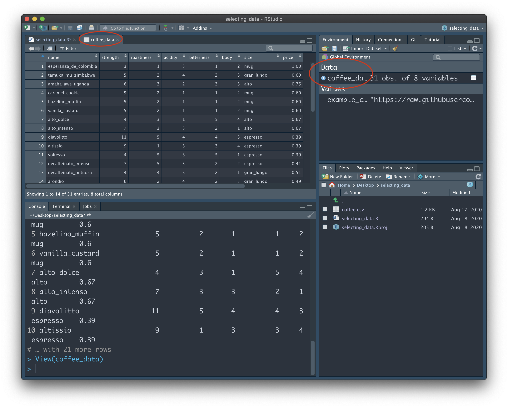
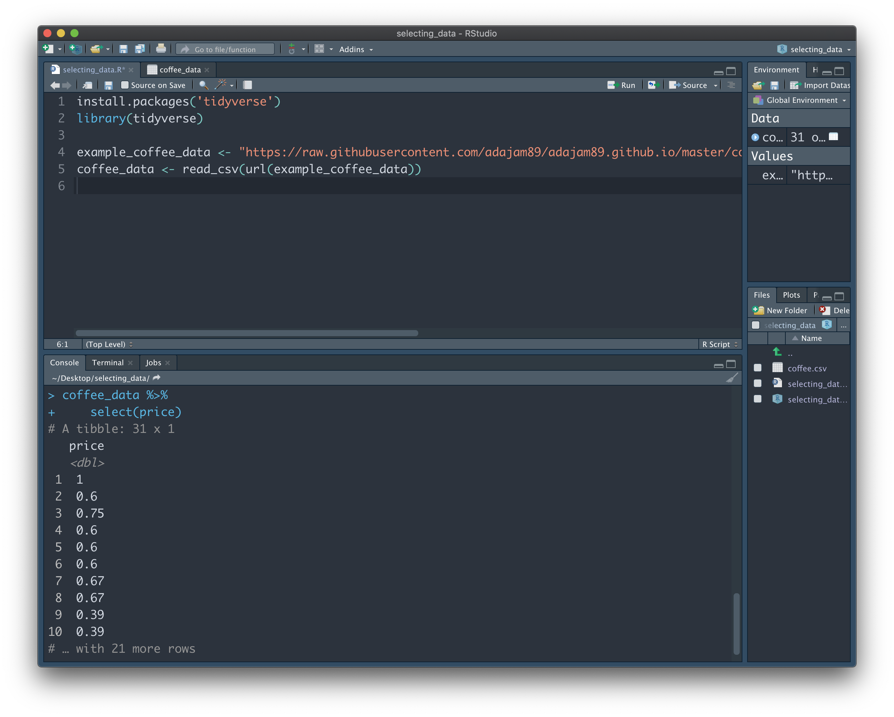
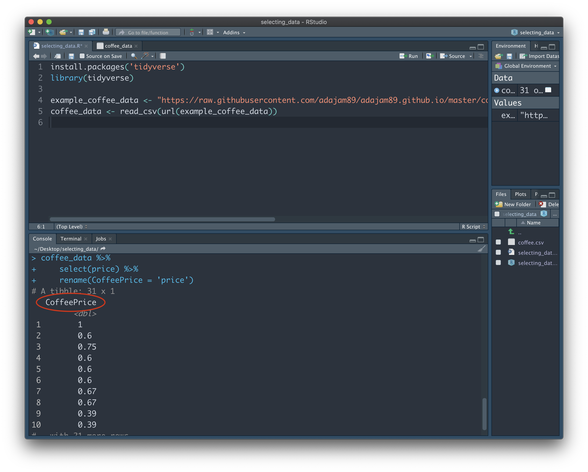
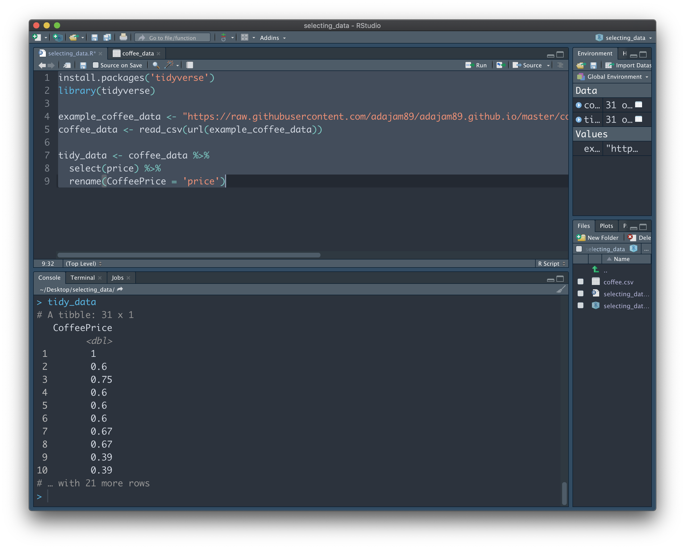
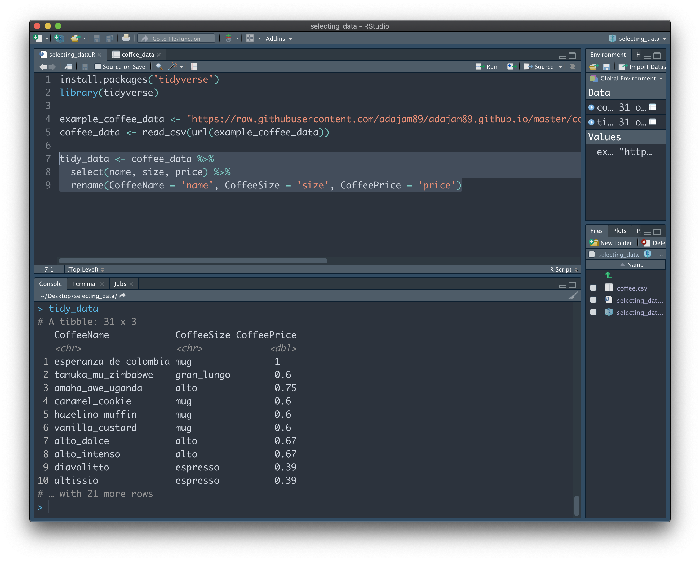
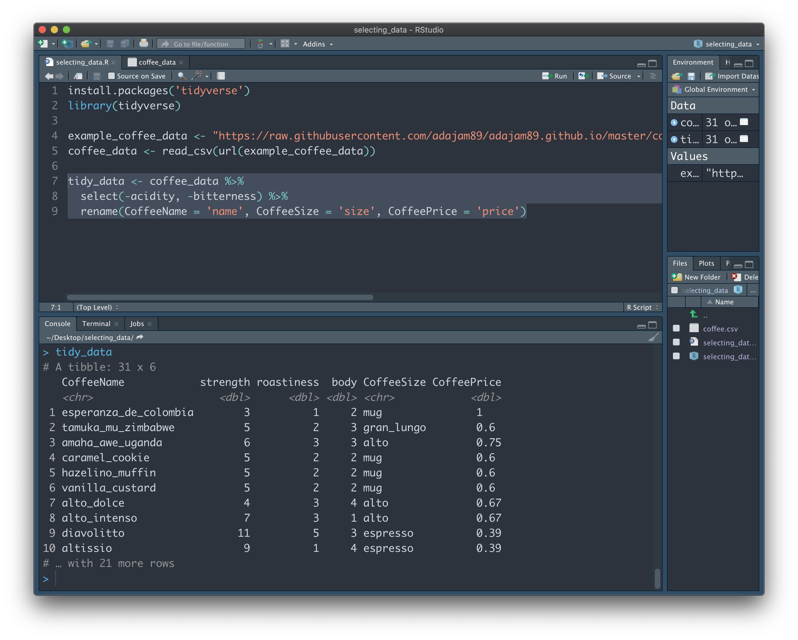
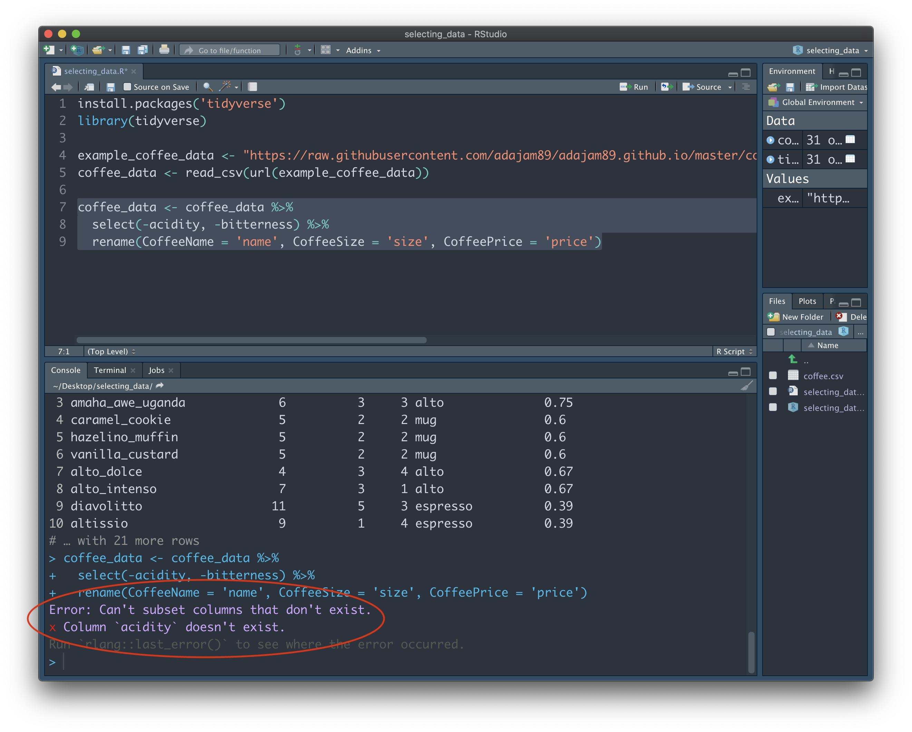
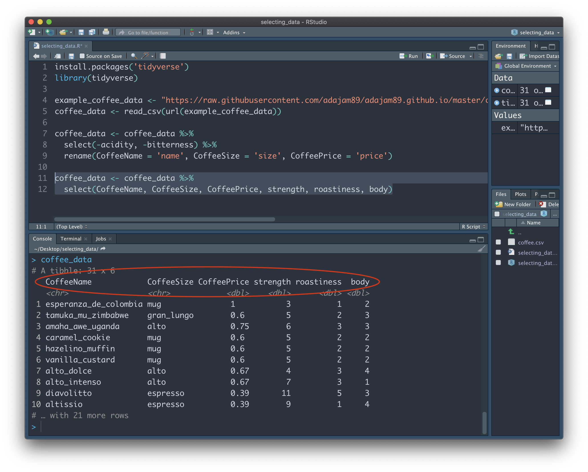

Selecting data.

There are a number of simple, yet very powerful tools available in R when it comes to wrangling your data. Here we'll demonstrate just how easy it is to select, delete, group, and more. Before we begin, you'll first need to have some data in RStudio. If you're following on from the previous guide (Importing data: the basics), you're already good to go! Just make sure you have the Project file you created last time open, along with the R script.
If you're jumping in fresh with this guide, simply copy and paste the code below into the Source window. Highlight everything, and then press "Run". This will bring you up to speed, and get some example data imported into RStudio for you:
install.packages('tidyverse') # This installs the tidyverse package.
library(tidyverse) # This tells RStudio to load up the tidyverse package.
example_coffee_data <- "https://raw.githubusercontent.com/adajam89/adajam89.github.io/master/coffee.csv" # This is the location of some example data of mine that is stored online.
coffee_data <- read_csv(url(example_coffee_data)) # Import the data.
First, let's have a little look at the data to see what we're dealing with. To do this, we can type the name of the variable containing the data - "coffee_data" - into the Console panel at the bottom, and press Enter:

We can see that the dataset isn't too big. The note at the top: "# A tibble: 31 x 8", tells us that our data has 31 rows, and 8 columns. A 'tibble' is the type of structure in R that contains our data. If you look just below row 10 of the output, you should also see the notice "# … with 21 more rows". This tells us that the entire dataset is not being shown to us here. Instead, RStudio is just giving us a glimpse of the first 10 rows, so as not to clutter the Console. You may be wondering why it doesn't just show us the whole thing...imagine our data is much longer (e.g. 10,000 rows), and we were shown the entire dataset each time we typed in its name - it would soon become a nightmare to scroll up and down through the Console!

Fortunately, there's an easy way for us to view all of the data without cluttering the Console. Look to your Environment panel (located in the top right in my screenshots). This is where all of your variables are listed, for easy reference. Under the "Data" section, click on the "coffee_data" variable. A new tab will open up in the Source window that allows us to browse all rows and columns of the data:
Note: If you're using your own data, now would be a good time to check that it is formatted in the 'correct' way. Specifically, we want each row to represent a unique 'case'. In other words, each participant should get their own row. In our example data, we could think of the different coffee names as individual participants. They each have their own row, and each have their own set of data toward a number of shared variables, such as 'strength', 'bitterness', and 'price'.
Click back to your R script tab, and/or close the tab that shows the full "coffee_data" dataset. Whilst our example data here doesn't have too many columns, it's not uncommon to have a huge dataset that contains many hundreds of columns. Sometimes we just want to look at, or extract, a few columns that are interesting to us. We can do this using 'select'.
Let's imagine we're only interested in a tiny portion of "coffee_data" - the data contained in the 'price' column. We can access just this data (and drop the rest) by using the following code (paste this into your Console and press enter):
coffee_data %>%
select(price)
You should be presented with just the 'price' column - on it's own - in the Console. Let's break down why that little bit of code gave us this result.
First we wrote the name of the variable that stores the data we're interested in (coffee_data). We then use the 'pipe' symbol (%>%) to the right of this. It's somewhat hard to describe what this symbol means - it's just something that inexplicably makes total sense with practice - but essentially it's saying "follow on from", or "and then do this". It's an amazing tool that lets us give as many instructions as we want, all of which will be applied to the variable at the top. You could also think of it as going down a pipe into the variable at the top - once inside, everything we do only applies to that variable. In this instance, we just want to 'grab' the "price" column - we do this with the function 'select' and listing the name of the column we want to get in parentheses. The result is the 'price' column being shown to us in the Console. None of the other columns contained in "coffee_data" are shown to us, since we did not ask to select them:
To further demonstrate the 'pipe' operater (%>%), we'll also rename the 'price' column after we grab it. We can do this by adapting our code like this:
coffee_data %>%
select(price) %>%
rename(CoffeePrice = 'price')
By adding another pipe operater (%>%) to the end of the second line, we're telling R that we want to keep on making changes within this variable. We then add a line that renames the column to 'CoffeePrice', from its original name 'price'. Note: this final line does not include %>% at the end, since we don't want to make anymore changes after it. This will rename the column when the result is shown to us:
Whenever we want to add more instructions (i.e. make additional transformations to our data), we can add %>% to the end of each line. We can add as many instructions as we like, and each will be completed in order from the top. Just remember, to do this, we always have to start with a variable at the top - this is the set of data that we actually want to apply these transformations to.
Just to make it clear, our current actions here did not alter the original 'coffee_data' dataset. Though we're being presented with just a single column right now, we have not overwritten or lost the rest of the columns. Rather, we just had a one-off peek at a column of interest contained within the full dataset. We can verify this by typing 'coffee_data' into the Console, and seeing that the full data is still intact.
In practice, it's often more useful to store these selections into a new variable, rather than have a one-time look. This allows us to access the results without having to type in the whole block of code each time. Add the following code to your R script in the Source window, highlight everything, and press "Run":
tidy_data <- coffee_data %>%
select(price) %>%
rename(CoffeePrice = 'price')
Now type "tidy_data" into the Console and hit Enter to see the result. Here, we have created a brand new variable named "tidy_data". This is followed by the "<-" operater, which essentially stores the result of everything on the right into the variable name on the left (similar to =). We can once again break down each step of the above code to see how 'tidy_data' ends up the way it does:
First, we added the name of a new empty variable called "tidy_data", and then said that it equals 'coffee_data'. We can think of both variables as being identical at this point - both containing all of our data. We then go on to say "but only the 'price' column of 'coffee_data'". This makes our new variable distinct from the full data, as it now only contains one column of the full data, rather than everything. Finally, we say "and we also want to rename that column". The result of all of those steps is saved to the new variable "tidy_data":
In reality, we'll probably want to select more than a single column of interest. Luckily, it's equally easy to 'grab' as many columns as we want using 'select':
tidy_data <- coffee_data %>%
select(name, size, price) %>%
rename(CoffeeName = 'name', CoffeeSize = 'size', CoffeePrice = 'price')
Here we've selected 3 columns of interest from the "coffee_data" dataset - name, size, and price (and renamed each of them):
Easy! But what if we have a big dataset (e.g. hundreds of columns) and only want to get rid of a few pesky columns? Obviously we don't want to write the name of every column we'd like to keep one-by-one, like above. Instead, we can simply add a minus symbol next to the column names we don't want:
tidy_data <- coffee_data %>%
select(-acidity, -bitterness) %>%
rename(CoffeeName = 'name', CoffeeSize = 'size', CoffeePrice = 'price')
On the first line, "tidy_data" starts off as being identical to "coffee_data". On the second line, however, we ask it to not select the "acidity" and "bitterness" columns. We're negating the 'select' function. So at this point, we have everything but those two columns stored in "tidy_data". We can then make additional transformations, such as renaming, on the columns we have leftover:
Hopefully everything so far makes sense. At first, you might be wondering why there isn't just a 'delete column' button in RStudio - something similar to Excel, for example. This is because it's so easy to extract the data we want into a new variable, that's it not really worth the risk of losing precious data that we may end up needing later on. Better safe than sorry, right? If there's a column in "coffee_data" we forgot to add when creating the 'tidy_data' variable, it's super easy to add it back in whenever we like.
We can overwrite variables with changes like this, which is probably the closest thing R has to delete:
coffee_data <- coffee_data %>%
select(-acidity, -bitterness) %>%
rename(CoffeeName = 'name', CoffeeSize = 'size', CoffeePrice = 'price')
Rather than naming a new variable on the left of "<-", we can instead repeat "coffee_data". This is basically saying: "coffee_data" equals "coffee_data", but make these changes. The old "coffee_data" no longer exists, and we no longer have access to the "acidity" or "bitterness columns". This is fine when we know what we're doing, we just have to be careful we don't lose anything useful. This is still much safer than deleting a column in Excel, since here we've left the .csv data file fully intact. If for whatever reason we need those removed columns back...we can just import the .csv again and voila!
One thing we must remember when overwriting variables is the state the variable is currently in. For example, if we were to now run the above code again, we will be confronted with an error:
We're asking R to not select the "acidity" and "bitterness" columns...but it can't find those columns to begin with, and doesn't know how to comply. Remember, the current state of "coffee_data" doesn't have those columns, since we already droppped them the first time we ran this bit of code. When you're juggling a lot of variables, and making a number of transformations, it can sometimes be tricky to keep track of the potential cause of such issues. By routinely creating new variables when making transformations, we can avoid errors like this.
Bonus tip: 'Select' is also great for rearranging the order of our columns. When we specify the names of columns we want using 'select', the order we write them in will be the order of the output. We can change the order of columns whenever we want by overwriting the "coffee_data" dataset:
coffee_data <- coffee_data %>%
select(CoffeeName, CoffeeSize, CoffeePrice, strength, roastiness, body)
